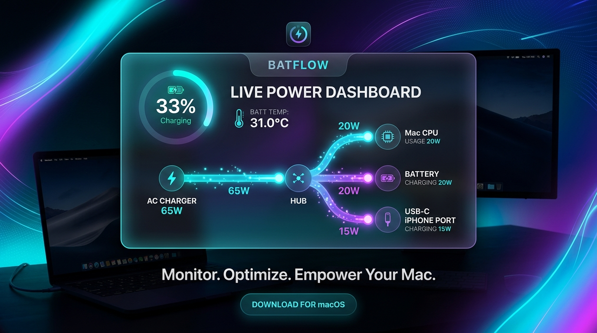

BatFlow brings deep hardware power distribution visualizers, SMC battery thermal sensing, and USB-C output port wattage monitoring to your Mac.

Comprehensive power metrics right in your system menu bar
Interactive animated node diagram showing live power distribution between AC Charger (65W), Mac CPU/System Usage, Battery Charge Rate, and USB-C Output Ports.
Direct interrogation of Apple Silicon SMC thermal keys (TB0T, TB1T, TB2T) for precise battery temperature in °C and °F.
Monitor real-time wattage (W), voltage (V), and current (A) delivered to connected external devices like your iPhone, iPad, or peripherals.
Rolling performance charts tracking system power draw, battery charge/discharge rate, and temperature over time built with Swift Charts.
Tailor status bar item formats (⚡️ 33% • 31.0°C • 65W, compact, or percentage only) and configurable polling intervals.
Built 100% natively in Swift & SwiftUI with zero third-party dependencies. Ultra-low CPU usage and memory footprint.